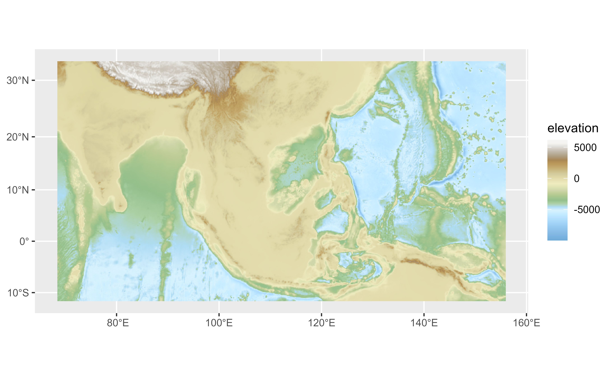
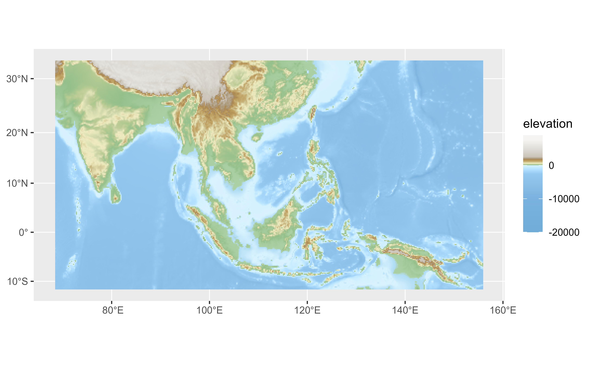

A tibble including the color map of
24 gradient palettes. All the
palettes includes also a definition of colors limits in terms of elevation
(meters), that can be used with ggplot2::scale_fill_gradientn().
Format
A tibble of 829 rows and 6 columns. with the following fields:
pal: Name of the palette.
limit: Recommended elevation limit (in meters) for each color.
r,g,b: Value of the red, green and blue channel (RGB color mode).
hex: Hex code of the color.
See also
Other datasets:
cross_blended_hypsometric_tints_db,
volcano2
Examples
# \donttest{
data("hypsometric_tints_db")
hypsometric_tints_db
#> # A tibble: 829 × 6
#> pal limit r g b hex
#> <chr> <dbl> <dbl> <dbl> <dbl> <chr>
#> 1 c3t1 0 137 185 148 #89B994
#> 2 c3t1 20 159 200 167 #9FC8A7
#> 3 c3t1 50 190 221 188 #BEDDBC
#> 4 c3t1 100 229 230 201 #E5E6C9
#> 5 c3t1 200 255 252 200 #FFFCC8
#> 6 c3t1 300 255 241 198 #FFF1C6
#> 7 c3t1 500 255 232 181 #FFE8B5
#> 8 c3t1 750 255 221 162 #FFDDA2
#> 9 c3t1 1000 255 211 144 #FFD390
#> 10 c3t1 1500 255 211 144 #FFD390
#> # … with 819 more rows
# Select a palette
wikicols <- hypsometric_tints_db %>%
filter(pal == "wiki-2.0")
f <- system.file("extdata/asia.tif", package = "tidyterra")
r <- terra::rast(f)
library(ggplot2)
p <- ggplot() +
geom_spatraster(data = r) +
labs(fill = "elevation")
p +
scale_fill_gradientn(colors = wikicols$hex)

# Use with limits
p +
scale_fill_gradientn(
colors = wikicols$hex,
values = scales::rescale(wikicols$limit),
limit = range(wikicols$limit)
)

# }